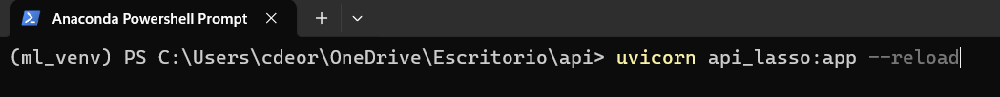
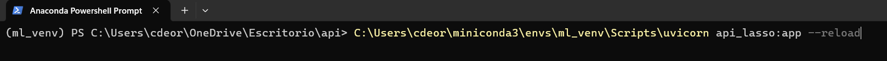
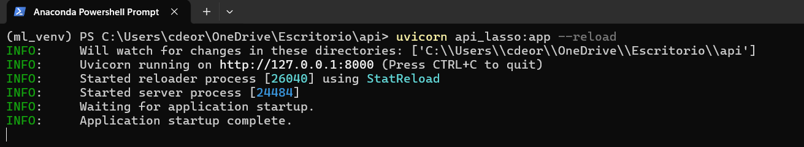
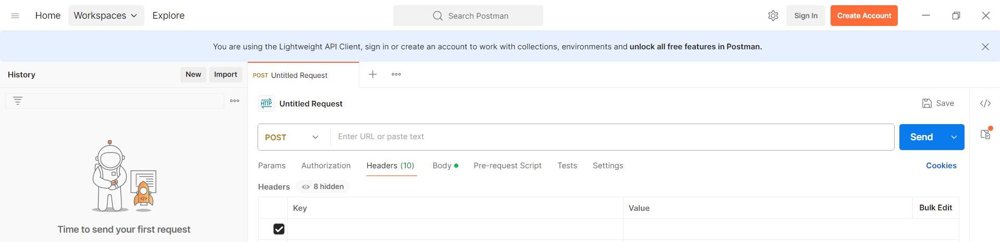
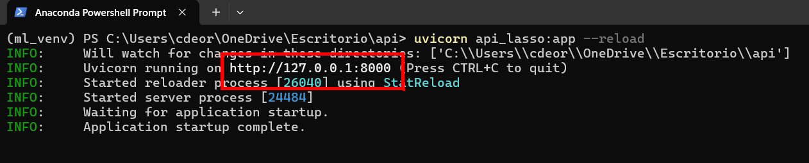
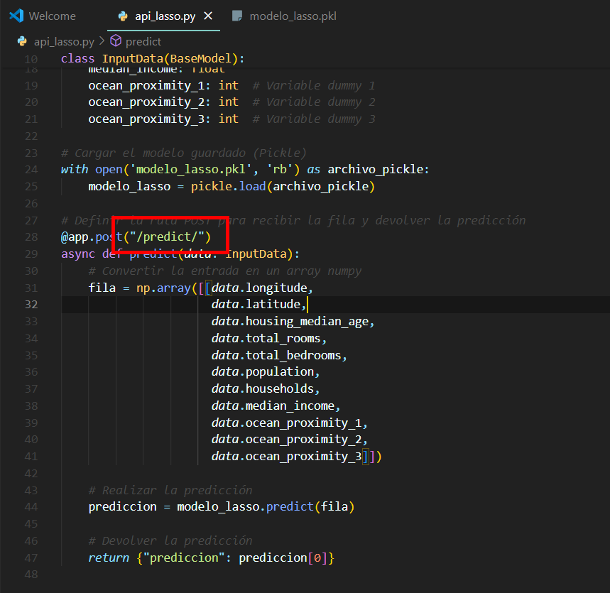
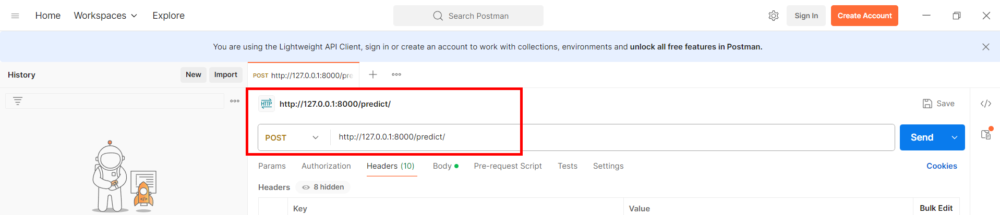
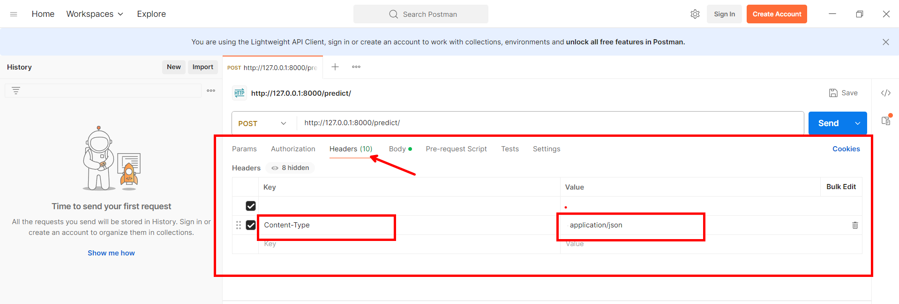
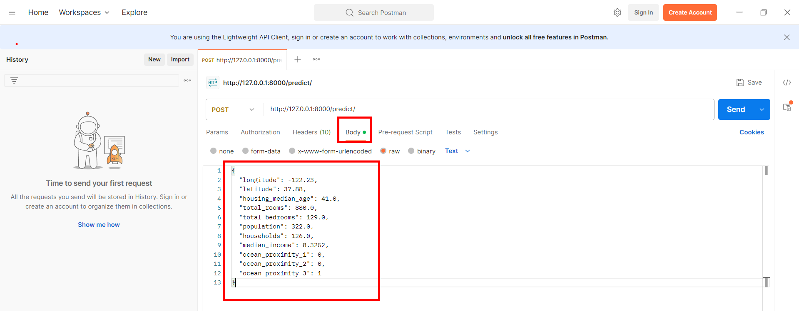

Modulo 6: Despliegue de modelos#
1. Guardar el modelo#
import pickle
# Guardar el modelo entrenado en un archivo pickle
with open('modelo_lasso.pkl', 'wb') as archivo_pickle:
pickle.dump(grid_search_lasso, archivo_pickle)
print("Modelo guardado exitosamente en 'modelo_lasso.pkl'")
2. Instalar#
pip install fastapi
pip install uvicorn
3. crear api_modelo.py#
from fastapi import FastAPI
from pydantic import BaseModel
import numpy as np
import pickle
# Crear la aplicación FastAPI
app = FastAPI()
# Definir la estructura de la fila de entrada usando Pydantic
class InputData(BaseModel):
longitude: float
latitude: float
housing_median_age: float
total_rooms: float
total_bedrooms: float
population: float
households: float
median_income: float
ocean_proximity_1: int # Variable dummy 1
ocean_proximity_2: int # Variable dummy 2
ocean_proximity_3: int # Variable dummy 3
# Cargar el modelo guardado (Pickle)
with open('modelo_lasso.pkl', 'rb') as archivo_pickle:
modelo_lasso = pickle.load(archivo_pickle)
# Definir la ruta POST para recibir la fila y devolver la predicción
@app.post("/predict/")
async def predict(data: InputData):
# Convertir la entrada en un array numpy
fila = np.array([[data.longitude,
data.latitude,
data.housing_median_age,
data.total_rooms,
data.total_bedrooms,
data.population,
data.households,
data.median_income,
data.ocean_proximity_1,
data.ocean_proximity_2,
data.ocean_proximity_3]])
# Realizar la predicción
prediccion = modelo_lasso.predict(fila)
# Devolver la predicción
return {"prediccion": prediccion[0]}
4. Levantamos el servidor en local#
La forma de levantar el servidor local es

Si esta ruta no funciona usa el path absoluto que es

La siguiente imagen nos indica que el servidor esta funcionando en local

5. Instalación de Postman#
6. Prueba de API: Solicitud POST#
Para enviar una solicitud POST a la api local debo hacer:
Escoger POST 
Especificar la URL del servidor local( “http://127.0.0.1:8000/predict/”)
Esto se creo asi:





Se le da enviar para obtener la prediccion y la prueba de la api
Subir a la nube#
Instalar Docker#
Crear requierements.txt#
(ml_venv) C:\Users\cdeor\OneDrive\Escritorio\api>pip freeze > requirements.txt